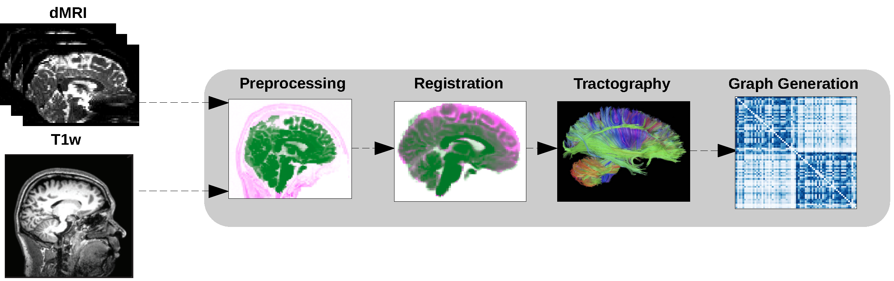
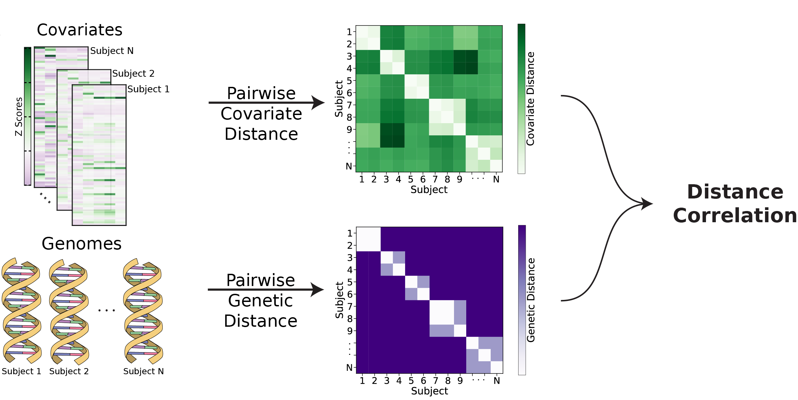
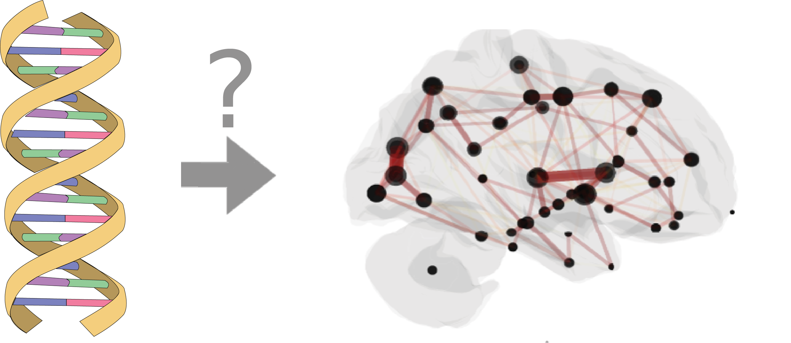

Heritability of Human Structural Connectomes#
Jaewon Chung#
(he/him) - NeuroData lab Johns Hopkins University - Biomedical Engineering
 j1c@jhu.edu
j1c@jhu.edu
 @j1c (Github)
@j1c (Github)
 @j1c (Twitter)
@j1c (Twitter)

What is heritability?#
Variations in phenotype caused by variations in genotype.
Potentially discover relationships between diseases and genetics.
Are the patterns of brain connectivity heritable?#
Brain connectivity as connectomes#
(aka networks or graphs)
Vertex: region of the brain
Edges: connectivity measure between a pair of vertices
Structural connectomes: estimated # of neuronal fibers
Undirected: neurons have no direction

How do we get structural connectomes?#

Heritability as causal problem#
Directed acyclic graph

Do genomes affect connectomes?#
Our hypothesis: \(H_0: F(\)Connectome|Genome\() = F(\)Connectome\()\) \(H_A: F(\)Connectome|Genome\() \neq F(\)Connectome\()\)
Alternatively: \(H_0: F(\)Connectome, Genome\() = F(\)Connectome\()F(\)Genome\()\) \(H_A: F(\)Connectome, Genome\() \neq F(\)Connectome\()F(\)Genome\()\)
Known as independence testing
Test statistic: distance correlation (dcorr)
Implication if false: there exists an associational heritability.
What is distance correlation?#
Measures dependence between two multivariate quantities.
For example: connectomes, genomes.
Can detect nonlinear associations.
Measures correlation between pairwise distances.

How to compare genomes?#
Typical twin studies do not sequence genomes.
Coefficient of kinship (\(\phi_{ij}\))
Probabilities of finding a particular gene at a particular location.
d(Genome\(_i\), Genome\(_j\)) = 1 - 2\(\phi_{ij}\).
Relationship |
\(\phi_{ij}\) |
\(1-2\phi_{ij}\) |
|---|---|---|
Monozygotic |
\(\frac{1}{2}\) |
\(0\) |
Dizygotic |
\(\frac{1}{4}\) |
\(\frac{1}{2}\) |
Non-twin siblings |
\(\frac{1}{4}\) |
\(\frac{1}{2}\) |
Unrelated |
\(0\) |
\(1\) |
How to compare connectomes?#
Random dot product graph (RDPG)
Each vertex (region of interest) has a low \(d\) dimensional latent vector (position).
Estimate latent position matrix \(X\) via adjacency spectral embedding.

d(Connectome\(_k\), Connectome\(_l\)) = \(||X^{(k)} - X^{(l)}R||_F\)
Human Connectome Project#
Brain scans from identical (monozygotic), fraternal (dizygotic), non-twin siblings.
Regions defined using Glasser parcellation (180 regions).
Genome and connectomes are dependent#

Sex |
All |
Females |
Males |
|---|---|---|---|
p-value |
\(<1\times10^{-5}\) |
\(<1\times10^{-3}\) |
\(<1\times10^{-2}\) |
Neuroanatomy (effect mediator)#
Literature show neuroanatomy (e.g. brain volume) is highly heritable.
Want to test \(H_0: F(\)Neuroanatomy, Genome\() = F(\)Neuroanatomy\()F(\)Genome\()\) \(H_A: F(\)Neuroanatomy, Genome\() \neq F(\)Neuroanatomy\()F(\)Genome\()\)
d(Neuroanatomy\(_i\), Neuroanatomy\(_j\)) = ||Neuroanatomy\(_i\) - Neuroanatomy\(_j\)||\(_F\)

Genome and neuroanatomy are dependent#

Sex |
All |
Females |
Males |
|---|---|---|---|
p-value |
\(<1\times10^{-3}\) |
\(<1\times10^{-2}\) |
\(<1\times10^{-2}\) |
DAG including interactions of neuroanatomy#

Do genomes affect connectomes given neuroanatomy?#
Want to test: \(H_0: F(\)Conn., Genome|Neuro.\() = F(\)Conn.|Neuro.\()F(\)Genome|Neuro.\()\) \(H_A: F(\)Conn., Genome|Neuro.\() \neq F(\)Conn.|Neuro.\()F(\)Genome|Neuro.\()\)
Known as conditional independence test
Test statistic: Conditional distance correlation (cdcorr)
Implication if false: there exists causal dependence of connectomes on genomes.
What is conditional distance correlation?#
Augment distance correlation procedure with third distance matrix.

Connectomes are still dependent on genome#
All tests are significant.
Sex |
All |
Females |
Males |
|---|---|---|---|
p-value |
\(<1\times10^{-2}\) |
\(<1\times10^{-2}\) |
\(<1\times10^{-2}\) |
Summary#

Present a causal model for heritability of connectomes.
Leveraged recent advances:
Statistical models for networks, allowing meaningful comparison of connectomes.
Distance and conditional distance correlation as test statistic for causal analysis\(^1\).
Connectomes are dependent on genome, suggesting heritability.
Additional slides#
Causal model#
\(X\) denote exposure, \(Y\) denote outcome, \(W\) denote measured covariates, \(Z\) denote unmeasured covariates
Want to estimate the effect of different exposures on the outcome, which is quantified using the backdoor formula if \(W\) and \(Z\) close all backdoor paths. $\(f_{w, z}(y|x) = \int_{\mathcal{W}\times\mathcal{Z}}f(y|x, w, z)f(w, z)\mathrm{d}(w, z) \)$
Above integrates over all measured and unmeasured covariates.
Averages the true outcome distribution over the conditional distribution of the measured and unmeasured covariates.
Causal model (cont.)#
We observe the triples \((x_i, y_i, w_i)\) for \(i\in[n]\).
Only be able to estimate the functions of \((X, Y, W)\)
The corresponding hypothesis test is: $\( H_0: f(y|x, w) = f(y|w) \quad \text{vs} \quad H_A: f(y|x, w) \neq f(y|w). \)$
Shortcomings - Network model#
Problems with connectome estimation.
Inability to determine the precise origin/termination of connections in the cortex.
-> false negatives
Crossing fibers
-> false positives
RDPG can only represent subset of independent edge networks.

Shortcomings - Model assumptions#
No interaction between genome and environment
No epistatsis
Effect of one gene is dependent on another
Ex: black hair and baldness
No dominance effects
Strong assumptions in genetic distances
What are environmental effects?#
Shared
Common experiences of siblings living in the same household.
household income, the family’s living situation, the dynamics between the parents, food consumed
Non-shared
Everything else
Epigenetics
Luck
schools, peers
Random dot product graphs#
Adjacency spectral embedding
representation of the vertices of the graphs into d dimensions via its singular value decomposition, given by \(A = USU^\top\) where \(U\in\mathbb{R}^{n×n}\) is the orthogonal matrix of eigenvectors and \(S \in \mathbb{R}^{n×n}\) is a diagonal matrix containing the eigenvalues of \(A\) ordered by magnitude.
\(ASE(A) = \hat X =\hat U \hat S ^{1/2}\) where \(\hat U \in\mathbb{R}^{n×d}\) contains the first \(d\) columns of \(U\), which correspond to the largest eigenvectors, and \(\hat S \in\mathbb{R}^{d×d}\) is the submatrix of \( S \) corresponding to the \(d\) largest eigenvalues in magnitude.